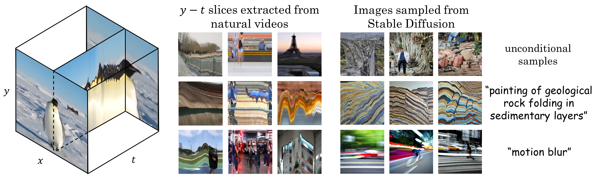
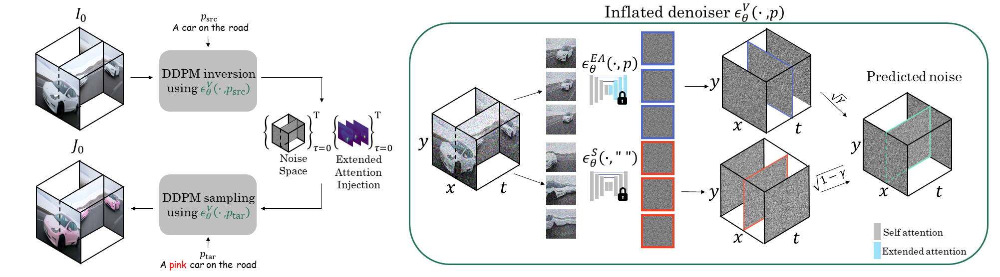

Slicedit: Zero-Shot Video Editing With Text-to-Image Diffusion Models Using Spatio-Temporal Slices
ICML 2024
¹Mines Paris - PSL Research University ²Technion – Israel Institute of Technology
Abstract
Text-to-image (T2I) diffusion models achieve state-of-the-art results in image synthesis and editing. However, leveraging such pre-trained models for video editing is considered a major challenge. Many existing works attempt to enforce temporal consistency in the edited video through explicit correspondence mechanisms, either in pixel space or between deep features. These methods, however, struggle with strong nonrigid motion. In this paper, we introduce a fundamentally different approach, which is based on the observation that spatiotemporal slices of natural videos exhibit similar characteristics to natural images. Thus, the same T2I diffusion model that is normally used only as a prior on video frames, can also serve as a strong prior for enhancing temporal consistency by applying it on spatiotemporal slices. Based on this observation, we present Slicedit#, a method for text-based video editing that utilizes a pre-trained T2I diffusion model to process both spatial and spatiotemporal slices. Our method generates videos that retain the structure and motion of the original video while adhering to the target text. Through extensive experiments, we demonstrate Slicedit's ability to edit a wide range of real-world videos, confirming its clear advantages compared to existing baselines.
#Slicedit can be pronounced ``slice-edit'' or ``sliced-it''

Overview
To edit a video, I0, we apply DDPM inversion using our video-denoising model, which is
an inflated version of the T2I model. This process extracts noise volumes and attention maps for each diffusion timestep.
Subsequently, we run DDPM sampling using the extracted noise space, while injecting the extended attention maps at
specific timesteps, as can be seen on the left pane of the figure.
The inversion and sampling are performed while conditioning the inflated denoiser on the source and
target text prompts, respectively.
Our inflated denoiser can be seen on the right pane. It employs two versions of the pre-trained image denoiser. A
version with extended attention is applied to x - y slices (blue), and the original denoiser is applied to y - t slices (red).
The two predicted noise volumes are then combined into the final predicted noise volume (marked in green).

See our paper for more details.
Editing Examples
A man is jumping
A humanoid robot is jumping
A man is hiking in front of mountains
A shiny silver robot is hiking in front of mountains
A man is running
Usain Bolt is running
A man is surfing
Iron Man is surfing
A man is spinning a basketball on his finger
Steph Curry is spinning a basketball on his finger
A bird is standing in the water
A pink origami bird is standing in the water
A black and white rabbit is eating
A black and white origami rabbit is eating
A cat on the grass in the sun
A cheetah on the grass in the sun
Swans are swimming in the lake
Flamingos are swimming in the lake
Fish are swimming
Sharks are swimming
Comparisons
Original
Ours
TokenFlow [1]
Pix2Video [2]
ControlVideo [3]
Rerender [4]
A man is doing parkour → A shiny silver robot is doing parkour
Original
Ours
TokenFlow [1]
Pix2Video [2]
ControlVideo [3]
Rerender [4]
An eagle → A pixar style eagle
Original
Ours
TokenFlow [1]
Pix2Video [2]
ControlVideo [3]
Tune A Video [5]
Flatten [6]
Rerender [4]
A cat on the grass in the sun → A lion on the grass in the sun
Original
Ours
TokenFlow [1]
Pix2Video [2]
ControlVideo [3]
Tune A Video [5]
Flatten [6]
Rerender [4]
Cows are grazing → Sheep are grazing
Original
Ours
TokenFlow [1]
Pix2Video [2]
ControlVideo [3]
Tune A Video [5]
Rerender [4]
A man is surfing → A shiny silver robot is surfing
Original
Ours
TokenFlow [1]
Pix2Video [2]
ControlVideo [3]
Tune A Video [5]
Rerender [4]
A penguin → An origami penguin
Original
Ours
TokenFlow [1]
Pix2Video [2]
ControlVideo [3]
Tune A Video [5]
Rerender [4]
A bird → A squirrel
Ablation Study
Original
Ours
w/o y-t slices
w/o Attn. injection
DDIM Inversion
A cow → An origami cow
A man is jumping → A humanoid robot is jumping
Our method uses DDPM inversion. For ablation purposes we provide results of our method with DDIM inversion. As can be seen, when using DDIM inversion our method is not able to successfully edit the video according to the text prompt.
Paper
Slicedit: Zero-Shot Video Editing With Text-to-Image Diffusion Models Using Spatio-Temporal Slices
Nathaniel Cohen*, Vladimir Kulikov*, Matan Kleiner*, Inbar Huberman-Spiegelglas, Tomer Michaeli.
Bibtex
For further ablation study, see our Supplementary Webpage.
Our official can be found in the official github repository.
References
[1] Geyer, Michal, Omer Bar-Tal, Shai Bagon, and Tali Dekel. "Tokenflow: Consistent diffusion features for consistent video editing." ICLR 2024.
[2] Ceylan, Duygu, Chun-Hao P. Huang, and Niloy J. Mitra. "Pix2video: Video editing using image diffusion." ICCV 2023.
[3] Zhang, Yabo, Yuxiang Wei, Dongsheng Jiang, Xiaopeng Zhang, Wangmeng Zuo, and Qi Tian. "Controlvideo: Training-free controllable text-to-video generation." ICLR 2024.
[4] Yang, Shuai, Yifan Zhou, Ziwei Liu, and Chen Change Loy. "Rerender A Video: Zero-Shot Text-Guided Video-to-Video Translation." SIGGRAPH Asia 2023.
[5] Wu, Jay Zhangjie, Yixiao Ge, Xintao Wang, Stan Weixian Lei, Yuchao Gu, Yufei Shi, Wynne Hsu, Ying Shan, Xiaohu Qie, and Mike Zheng Shou. "Tune-a-video: One-shot tuning of image diffusion models for text-to-video generation." ICCV 2023.
[6] Cong, Yuren, Mengmeng Xu, Christian Simon, Shoufa Chen, Jiawei Ren, Yanping Xie, Juan-Manuel Perez-Rua, Bodo Rosenhahn, Tao Xiang, and Sen He. "FLATTEN: optical FLow-guided ATTENtion for consistent text-to-video editing." ICLR 2024.
Acknowledgements
Icons are taken from font awesome or from Academicons.